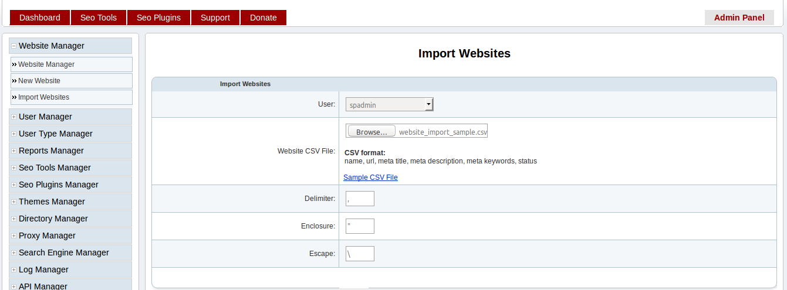
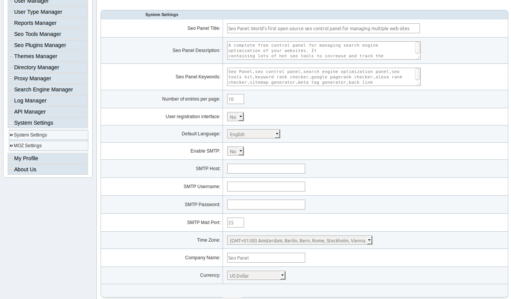
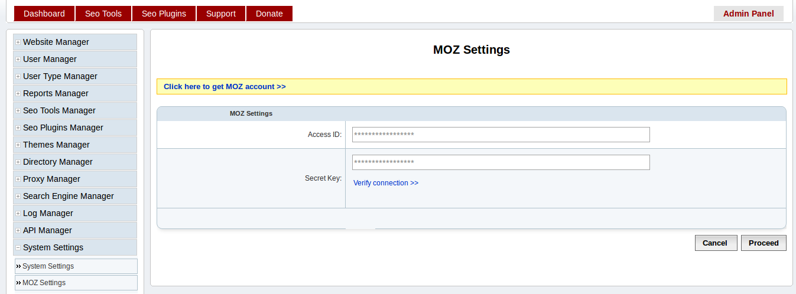
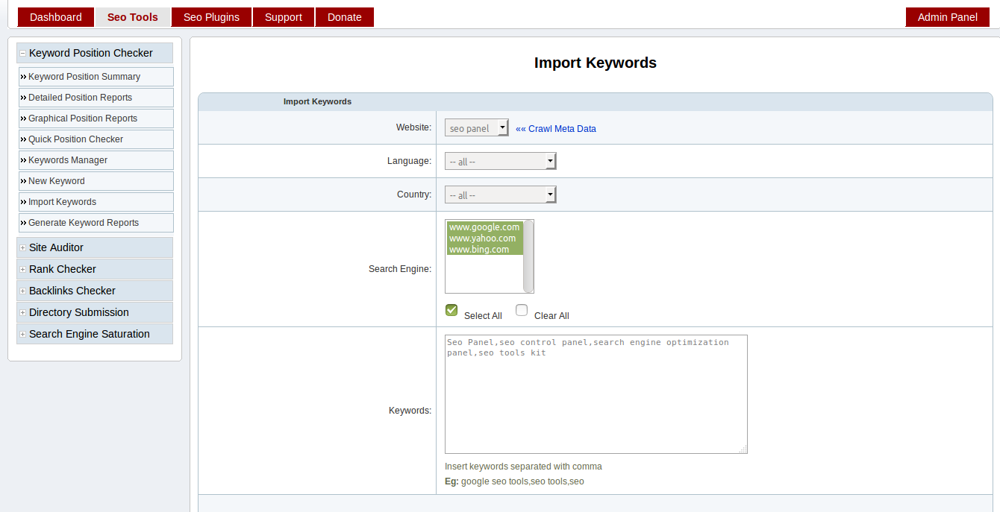

2. User Guide¶
This guide explains, how user setup seo panel according to their requirement.
1. Website Management¶
Create Website¶
After installation of seo panel, next step is to create website.
Go to Admin Panel => Website Manager => New Website
Enter details as following screen shot

User - The owner of the website Eg: spadmin
Name - The name of the website Eg: Seo Panel
Url - The url to website page Eg: http://www.seopanel.in/
Click on `Crawl Meta Data` link to get the following details of website. You can also edit this details later.
Title - The title of the website
Description - The description of the website
Keywords - The keywords related to the website
You can also edit, activate, deactivate and delete websites using options available in the Website Manager page.
Import Websites¶
You can also import group of websites to seo panel using this feature.
Go to Admin Panel => Website Manager => Import Websites
Enter details as following screen shot
User - The owner of the website Eg: spadmin
Website CSV File: - The group of websites added in csv format
CSV format:
name, url, meta title, meta description, meta keywords, status
Click on `Sample CSV File` link to get sample csv file and create your website csv file using it.
Delimiter - The delimiter character used in the csv format(default value is coma `,`)
Enclosure - The enclosure character used in the csv format when value contains delimiter(default value is double quotes `”`). Eg: mango,orange
Escape - The escape character used in the csv format(Default value is forward backslash `\`)
Proceed with the values in the form, you will get following window with the stats of import.

2. Settings¶
System Settings¶
Next step is to update system settings according to your environment.
Go to Admin Panel => System Settings=> System Settings
Enter details as following screen shot
Seo Panel Title - The title of your seo panel installation Eg: Smith’s seo panel
Seo Panel Description - The meta description of your seo panel installation
Seo Panel Keywords - The meta keywords of your seo panel installation
Number of entries per page - The max number of entries to start pagination(Default value is ‘10’)
User registration interface - Enable / Disable users to register in your seo panel
Default Language - The default language of your seo panel
SMTP Settings
- Enable SMTP - Enable / Disable smtp settings for sending mail from seo panel
- SMTP Host - The hostname of smtp server(default value is ‘localhost’)
- SMTP Username - SMTP account username
- SMTP Password - SMTP account password
- SMTP Mail Port - SMTP mail port used(default value is ‘25’)
Time Zone: - Your timezone to see reports in your time
Company Name - The name of your company
Currency - Currency used in seo panel transactions
MOZ Settings¶
Setup MOZ API to get website ranking related informations
Go to Admin Panel => System Settings=> MOZ Settings
Click on `Click here to get MOZ account` link to get free MOZ API account
Enter details as following screen shot
- Access ID - The access id of MOZ API
- Secret Key - The secret key of MOZ API
Click on `Verify connection` link to verify the API settings are working
3. Keyword Management¶
Create Keyword¶
Next step is to create keywords under websites
Go to Seo Tools => Keyword Position Checker => New Keyword
Enter details as following screen shot

- Name - Add keyword to search in search engine
- Website - The website needs to be checked with keyword search results
- Language - The language in which keyword search to be done. If you are using localized search engines like google.de, no need to select language.
- Country - The country in which keyword search to be done. If you are using localized search engines like google.de, no need to select language.
- Search Engine - Select the search engines in which keyword needs to checked. Click on ‘Select All’ to select all or use `CTRL` key to select multiple entries.
You can also edit, activate, deactivate and delete keywords using options available in the Keyword Manager page.
Import Keywords¶
You can also import group of keywords to seo panel using this feature.
Go to Seo Tools => Keyword Position Checker => Import Keywords
Enter details as following screen shot
Website - The website needs to be checked with keyword search results
Click on `Crawl Meta Data` link to get keywords of website. You can also edit this details before proceed.
Language - The language in which keyword search to be done. If you are using localized search engines like google.de, no need to select language.
Country - The country in which keyword search to be done. If you are using localized search engines like google.de, no need to select language.
Search Engine - Select the search engines in which keyword needs to checked. Click on ‘Select All’ to select all or use `CTRL` key to select multiple entries.
Keywords - Add keywords to be imported to seo panel separated with comma Eg: google seo tools,seo tools,seo
Proceed with the values in the form, you will get following window with the stats of import.

Quick Position Checker¶
This feature used to find the rank of a website in keyword search results by with out storing any data in database.
Go to Seo Tools => Keyword Position Checker => Quick Position Checker
Enter details as following screen shot

- Search Engine - Select the search engines in which keyword needs to checked
- Language - The language in which keyword search to be done. If you are using localized search engines like google.de, no need to select language.
- Country - The country in which keyword search to be done. If you are using localized search engines like google.de, no need to select language.
- Website - The website needs to be checked in keyword search results
- Keyword - Add keyword to search in search engine
- Show All results - Checked to see all results in of keyword search in search engine
4. Reports Management¶
Report Settings¶
Next step is to configure seo panel reports
Go to Admin Panel => Reports Manager => Report Settings
Enter details as following screen shot

- Delay between each spider crawl(seconds) - The delay between each crawling in your seo panel(Default value is 5 seconds)
- Allow user to generate reports - Allow users to generate reports or not(Default value is No)
- User agent - User agent used while crawling a page in seo panel
- Allow users to schedule report - Allow users to edit their report generation settings(Default value is Yes)
- System report generation interval - Seo panel report generation interval. We can set it as Daily, 2 days, Weekly and Monthly(Default value is Daily)
- Enable report email notification - Enable this feature to send reports in email
- Number of keywords needs to be checked in each cron execution - The number of keywords used in reports generation for each cron job execution(default value is 1). For efficient report generation keep it as 1
Cron Command¶
Cron job is the best method to generate reports effectively with out failures.
Go to Admin Panel => Reports Manager => Cron Command
Add following command to your cron tab
*/15 * * * * php /opt/lampp/htdocs/seopanel/cron.php

Check following tutorials to setup cron job in different environments
Setup cron job in cpanel
https://www.siteground.com/tutorials/cpanel/cron_jobs.htm
Setup cron job in plesk
Setup cron job in linux
Setup cron job in windows
Schedule Reports¶
You can also schedule reports for different users
Go to Admin Panel => Reports Manager => Schedule Reports
Enter details as following screen shot

- User - Select corresponding user to schedule reports
- Next report generation time - Next report generation date
- Reports generation interval - User report generation interval. We can set it as Daily, 2 days, Weekly and Monthly(Default value is Daily)
- Email notification - Enable this feature to send reports in user email
Report Generation Manager¶
We did not recommend to use this feature, as it may add captcha to search engine results. We plan to deprecate this feature in new releases.
Go to Admin Panel => Reports Manager => Report Generation Manager
Enter details as following screen shot

- Website - Select the required website for report generation
- Seo Tools - Choose required seo tool from the list
Archived Reports¶
Here you can see overall reports of websites added in seo panel.
Go to Admin Panel => Reports Manager => Archived Reports
Check details in following screen shot

Filters
Name - Enter required keyword filter the reports
Period - Enter date interval to filter the reports
Website - Choose required website to filter the results
Report Type - You can select different reports types
- Keyword Position Summary - Select to get keyword reports only
- Website Statistics - Select to get website reports only
You can also choose following to download and print reports in different formats
- PDF - Click on PDF icon to download reports in PDF format
- Export - Click on Export Icon to download reports in .csv format
- Print - Click on Print Icon to print te reports
5. Site Auditor¶
Create Project¶
This section will help you to audit your website to know the stats related to SEO
Go to Seo Tools => Site Auditor => Auditor Projects
Click on ‘New Project’ button
Enter details as following screen shot

- Website - Select a website needs to be audited
- Maximum number of pages to be checked - Maximum number of pages needs to be audited(default value is 500, it can be changed from Auditor Settings)
- Exclude links - Insert links separated with comma needs to be excluded to prevent infinite links in reports. Eg: /plugin/l/, &lang_code=
- Check pagerank of pages - Check pagerank of pages(Note: it will increase the execution time of a project)
- Check backlinks of pages - Check backlinks of pages(Note: it will increase the execution time of a project)
- Check pages indexed or not - Check index status of pages(Note: it will increase the execution time of a project)
- Store all links found in a page - Store links found in pages for more detailed reports
- Check broken links in a page - Check brocken links in pages(Note: it will increase the execution time of a project)
- Execute with cron - Execute report generation with cron job. We recommened to select ‘Yes’ for better report generation.
You can also edit, activate, deactivate and delete projects using options available in the Auditor Projects page.
Generate Reports¶
This section help you to generate reports of site auditor projects.
We have 2 methods to generate reports, we recommend to use cron job method for report generation.
- Cron Job
Go to Seo Tools => Site Auditor => Cron Command
Add following command to your cron tab
*/15 * * * * php /opt/lampp/htdocs/seopanel/siteauditorcron.php
- Manual Report Generation
Go to Seo Tools => Site Auditor => Auditor Projects
Select ‘Run Project’ from Action select box of corresponding project and proceed.
You will get a window like following screen shot with stats.

Auditor Reports¶
This section will help you to understand different types of site auditor reports
Go to Seo Tools => Site Auditor => Auditor Reports
- Reports

6. User Management¶
Create User¶
This section help you to manage users of soe panel.
Go to Admin Panel => User Manager => New User
Enter details as following screen shot

- Username - Enter username of the user
- Password - Enter password for user account
- Confirm Password - Enter confirm password for user
- First Name - Enter first name of the user
- Last Name - Enter last name of the user
- Email - Enter email address of the user
- User Type - Select user type according to the requirement
- Expiry Date - The expiry date for the user account. Please add blank entry, if you do not want to set expiry date for user account. If user account expired, user could not access the features of seo panel.
You can also edit, activate, deactivate and delete users using options available in the User Manager page.
Create User Type¶
Using this feature we can add new user type with custom privileges.
Go to Admin Panel => User Type Manager => New User Type
Enter details as following screen shot

- Name - Enter name of the user type
- Description - Enter description of the user type
- Keywords Count - Maximum number of keywords can be created by user
- Websites Count - Maximum number of websites can be created by user
- Status - Status of the user type
You can also edit, activate, deactivate and delete user type using options available in the User Type Manager page.
Also we can integrate payment plugin with user type manager of seo panel to do subscription business.
Click on following link to download and activate membership subscription plugin.